Wiga Mobile merupakan aplikasi sistem informasi terintegrasi yang dikembangkan secara mandiri oleh tim IT Institut Teknologi dan Bisnis Widya Gama Lumajang yang secara resmi diluncurkan pada tanggal 12 Desember 2025 dan secara aktif diterapkan pada periode genap tahun akademik 2025/2026 sebagai wujud komitmen institusi dalam mewujudkan transformasi digital kampus yang berkelanjutan.
Pengembangan Wiga Mobile telah dirancang secara strategis sejak bulan september tahun 2023, diawali dengan pembangunan fondasi sistem inti kampus yang mencakup Sistem Informasi Keuangan, Digital Signature, Single Sign On (SSO), serta Sistem Informasi Akademik. Fondasi ini dikembangkan untuk memastikan keamanan data, efisiensi proses, dan kemudahan akses bagi seluruh civitas akademika.
Wiga Mobile tidak hanya berfungsi sebagai aplikasi, melainkan sebagai ekosistem digital kampus yang mengintegrasikan berbagai layanan dan sistem informasi dalam satu platform terpadu. Ke depan, Wiga Mobile direncanakan untuk terus dikembangkan dengan mengintegrasikan berbagai sistem pendukung lainnya, antara lain Sistem Informasi Kepegawaian, Inventory, Tracert Study, E-Quality, E-Class / Learning Management System, Akreditasi, E-Resource, E-statistik serta layanan digital kampus lainnya yang mendukung proses akademik, administrasi, dan pengambilan keputusan berbasis data.
Melalui satu identitas dan satu akses, Wiga Mobile menghadirkan pengalaman digital yang lebih sederhana, terukur, dan efisien, sekaligus menjadi fondasi bagi terwujudnya kampus cerdas, modern, dan adaptif terhadap perkembangan teknologi.

Untuk memulai menggunakan aplikasi Wiga Mobile baik dengan menggunakan Laptop maupun Smartphone, caranya cukup akses alamat url https://sso.itbwigalumajang.ac.id melalui aplikasi web browser yang tersedia.

Untuk mempermudah apabila menggunakan smartphone, tambahkan shortcut dengan menekan Install saat pertama kali mengakses Wiga Mobile.
Setelah berhasil login, tampilan pertama adalah ekosistem aplikasi yang nantinya akan dikembangkan secara bertahap. Daftar aplikasi yang dapat diakses adalah berdasarkan dari jabatan yang diemban oleh bapak ibu dosen dan memungkinkan juga memiliki fitur yang berbeda, secara umum adalah seperti pada contoh berikut:

Pada tahap sebelumnya atau proses login telah berhasil, untuk memulai memanfaatkan ekosistem digital Wiga Mobile, bapak ibu dosen dapat memilih aplikasi yang akan diakses. untuk memulai dengan melakukan konfirmasi persetujuan terkait Rencana Studi mahasiswa yaitu awal mula sebelum perkuliahan dimulai adalah proses pembimbingan tentang rencana studi mahasiswa.
Tahapan Pertama
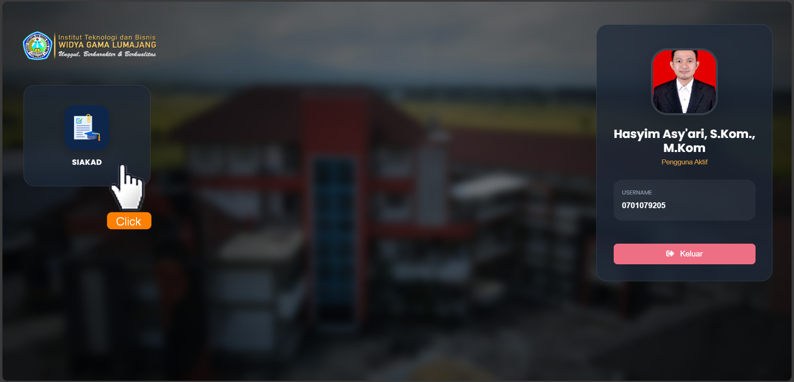
Tahapan Kedua
Pilih menu Konseling, lalu pilih Rencana Studi untuk menampilkan daftar perwalian serta mengkonfirmasi rencana studi mahasiswa.
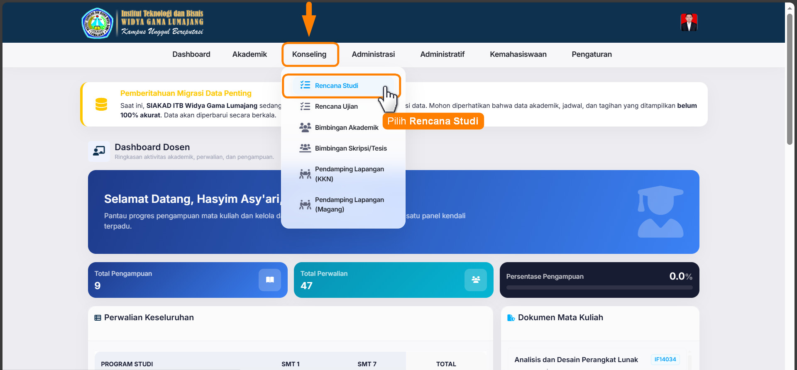
Tahapan Ketiga
Pada halaman rencana studi terdapat daftar seluruh mahasiswa perwalian dari Bapak Ibu dosen. Untuk mengetahui mahasiswa yang sedang meminta persetujuan atau konfirmasi terkait rencana studi mahasiswa pada semester berjalan dapat diketahui pada kolom Status KRS, dimana statusnya yaitu Melakukan Pengajuan KRS seperti pada gambar berikut.
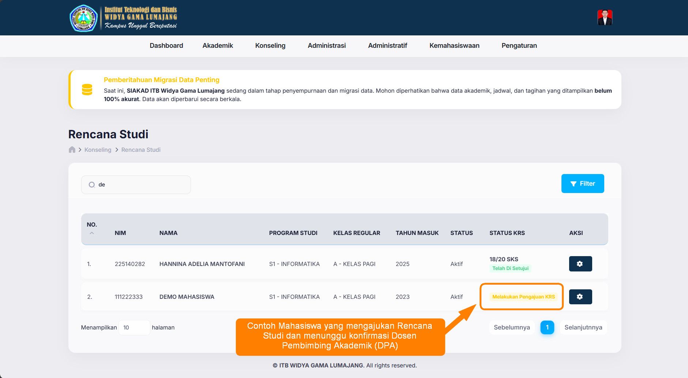
Untuk melihat detail rencana studi mahasiswa klik tombol (setting)/Aksi-Rencana Studi seperti pada gambar berikut:
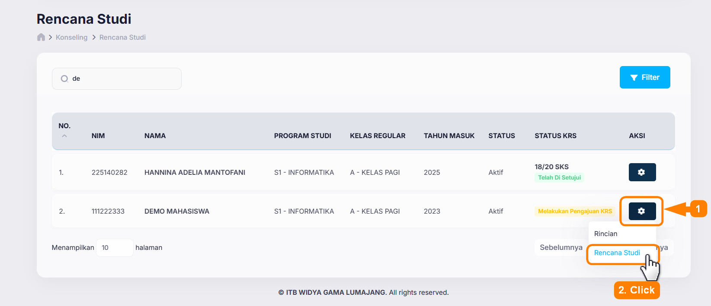
Tahapan Keempat dan Kelima
Checklist pada matakuliah yang disetujui untuk diikuti oleh mahasiswa pada periode semester berjalan, kemudian click submit.
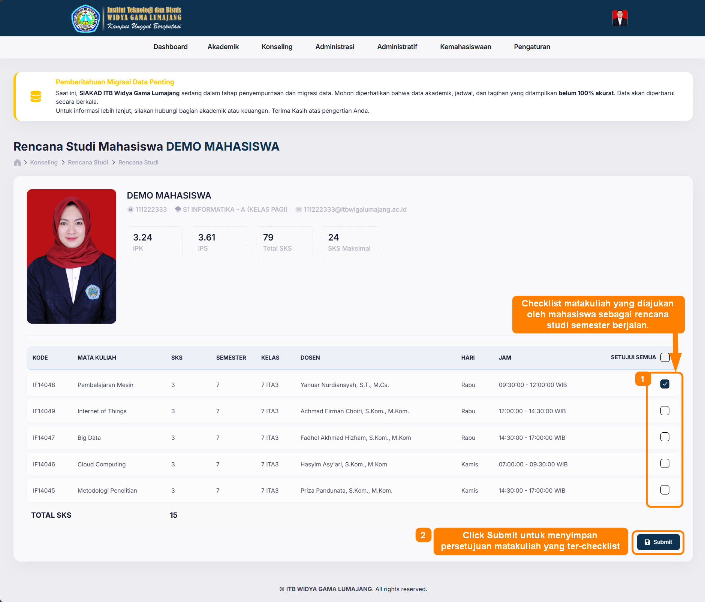
Setelah click submit, maka akan muncul Alert sebagai persetujuan. Click konfirmasi untuk meng-konfirmasinya.
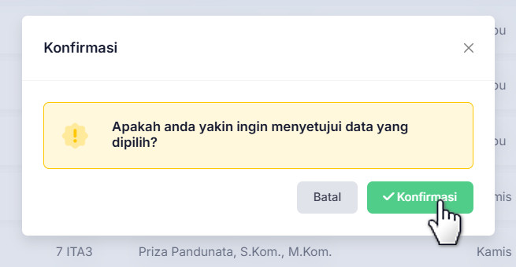
Contoh rencana studi yang sudah terkonfirmasi / telah disetujui
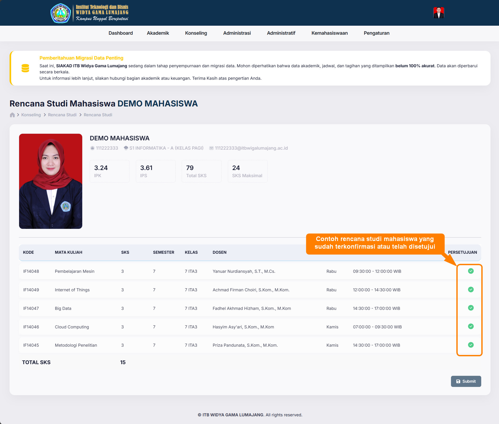
Pada sisi mahasiswa, maka dokumen Rencana Studi sudah ter-tandatangani secara digital. Dimana tanda tangan digital tersebut ketika terscan akan memuat informasi nama dokumen, penandatangan, dll. Seperti pada contoh gambar berikut.
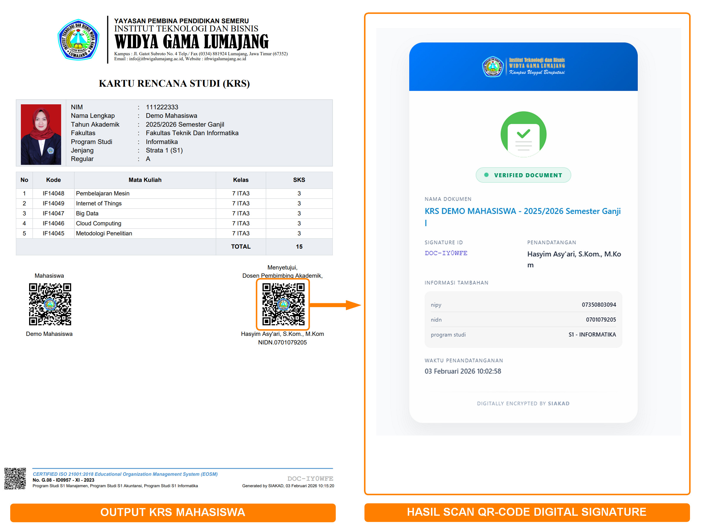
Pada menu Jadwal Pengampuan tidak hanya memuat informasi terkait dengan jadwal pengampuan selama periode semester berjalan melainkan memuat beberapa informasi dan beberapa fitur meliputi:
- Daftar matakuliah yang akan diampu selama periode semester berjalan
- Daftar kelas paralel selama periode semester berjalan
- Melihat dan Upload Dokumen RPS, RPP, dan Silabus
- Upload Soal UTS dan UAS
Untuk mengakses menu Jadwal Pengampuan melalui menu Akademik-Jadwal Pengampuan seperti pada gambar berikut.
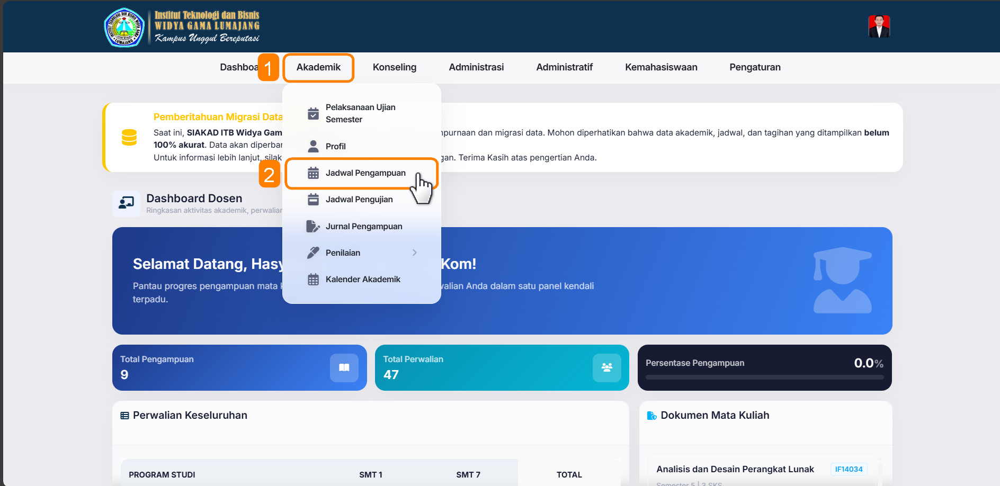
Berikut bagian-bagian yang terdapat pada menu Jadwal Pengampuan
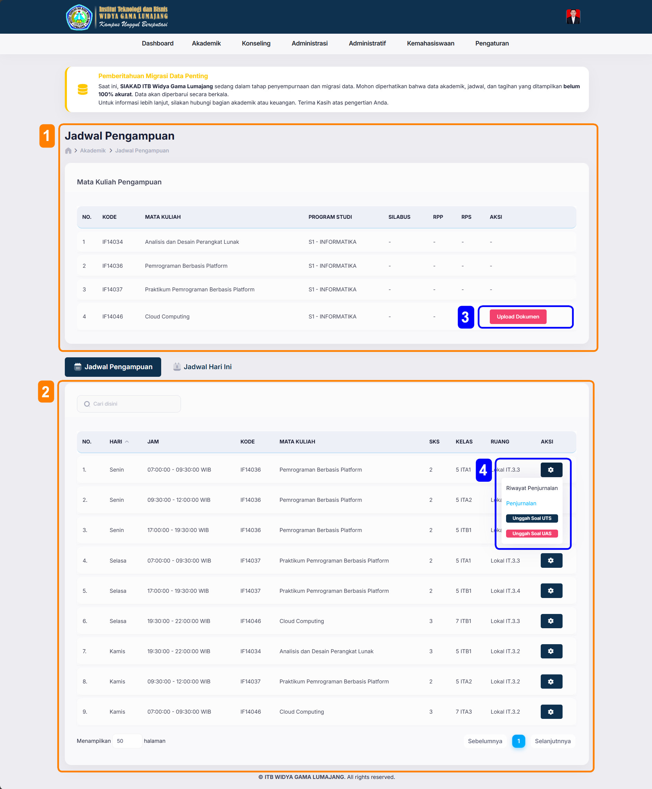
Menu jurnal perkuliahan adalah menu yang memiliki fungsi sebagai pencatatan administrasi penjurnalan perkuliahan untuk setiap matakuliah per kelas paralel. Pada menu jurnal perkuliahan akan menampilkan semua matakuliah per kelas paralel yang sedang diampu pada periode semester berjalan. Umumnya jurnal perkuliahan berisi tentang topik materi yang diberikan kepada mahasiswa untuk setiap pertemuan selama 14 kali pertemuan dan 2 kali evaluasi (UTS dan UAS).
Langkah Pertama
Akses menu Jurnal Pengampuan dengan cara pertama.
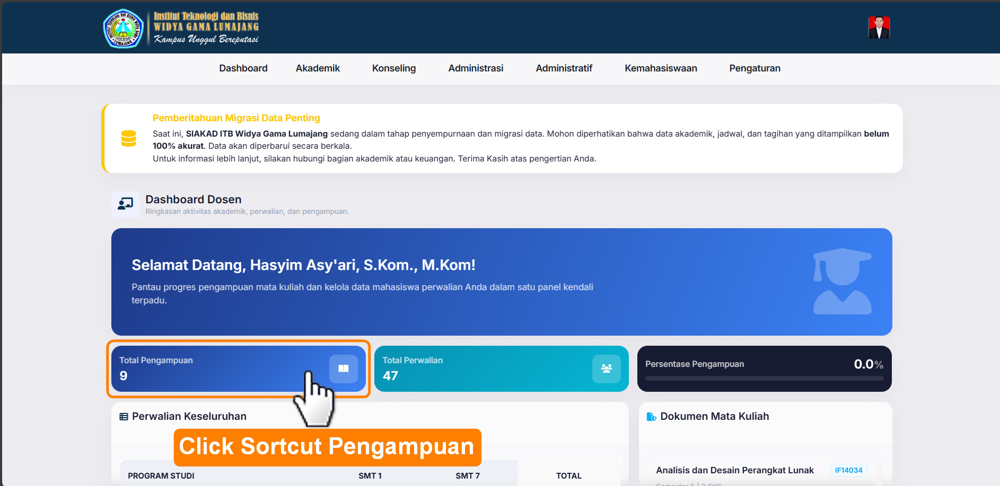
Akses menu Jurnal Pengampuan dengan cara kedua.
Berikut halaman menu Jurnal Pengampuan beserta bagian-bagian yang terdapat pada menu Jurnal Pengampuan.
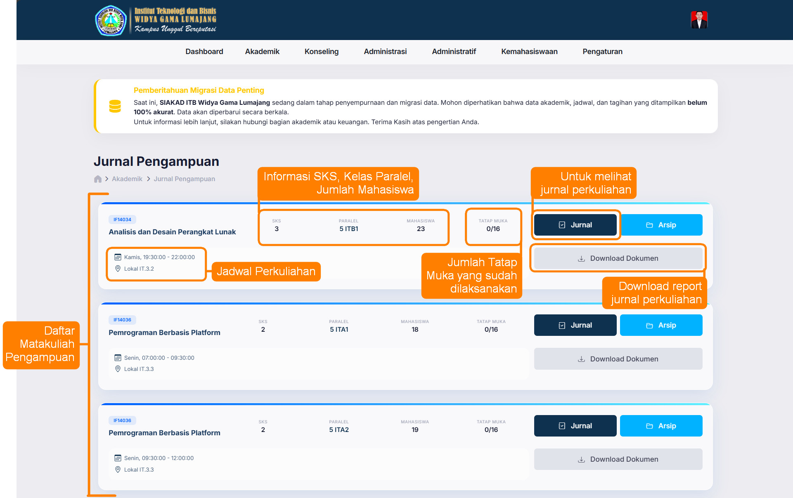
Langkah Kedua
Untuk memulai membuat jurnal perkuliahan, pilih salah satu matakuliah yang akan ditambahkan riwayat penjurnalan perkuliahan dengan cara Click Jurnal seperti pada gambar berikut.
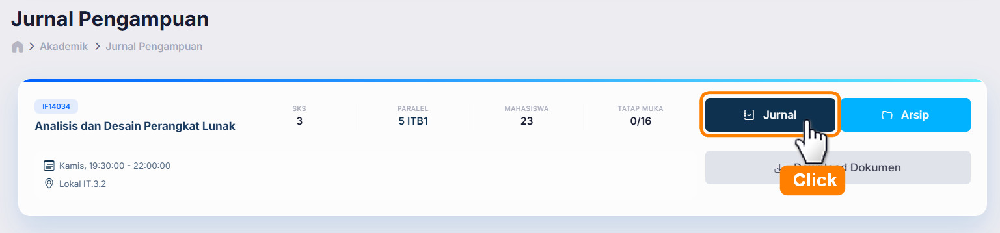
Setelah memilih dan Click Jurnal pada salah satu matakuliah pengampuan, maka akan muncul halaman riwayat penjurnalan matakuliah tersebut. Seperti pada gambar berikut.
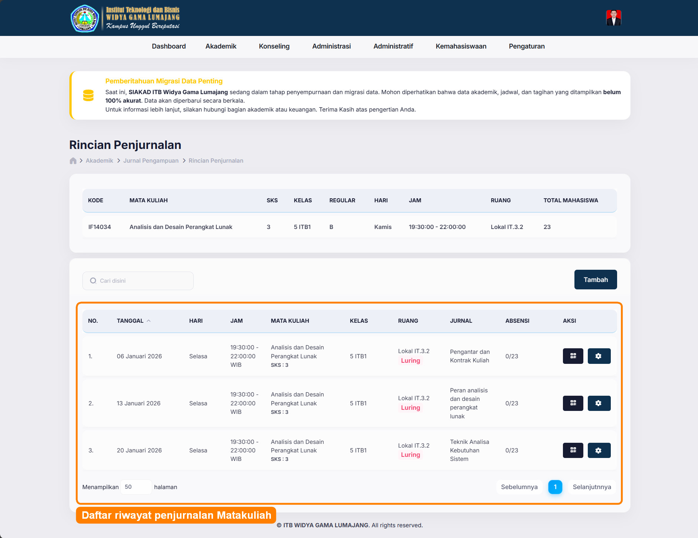
Langkah Ketiga
Selanjutnya, untuk membuat/menambah riwayat perkuliahan (jurnal pengampuan). Click menu Tambah kemudian lengkapi form data yang diperlukan meliputi tanggal, jam, ruang, kategori(luring/daring), jenis pengajaran(materi/kuis), dan topik materi yang akan disampaikan.
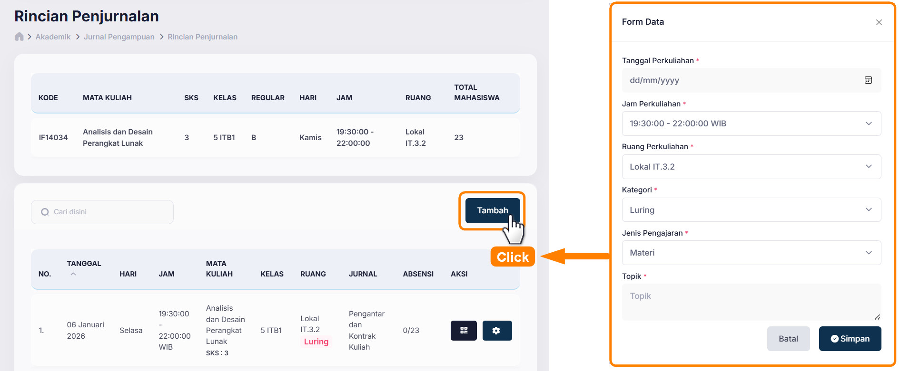
Setelah mengisi form data tersebut, selanjutnya untuk menyimpan jurnal perkuliahan silahkan click Simpan maka riwayat penjurnalan akan bertambah.
Setelah berhasil menambahkan Jurnal Pengampuan. Selanjutnya adalah bagaimana supaya mahasiswa dapat melakukan pengisian presensi secara digital melalui SIAKAD mahasiswa, yaitu dengan share QR-Code supaya dapat discan oleh mahasiswa sebagai berikut.
Tahap Pertama
- Akses menu Jurnal Pengampuan
- Pilih salah satu matakuliah yang akan dilaksanakan absensi
- Pastikan pada step sebelumnya matakuliah tersebut sudah dibuatkan jurnal perkuliahan
Tahap Kedua
Pilih salah satu riwayat jurnal perkuliahan yang sesuai dengan tanggal dan jam pelaksanaan absensi mahasiswa dengan cara Click Icon QR seperti pada gambar berikut.
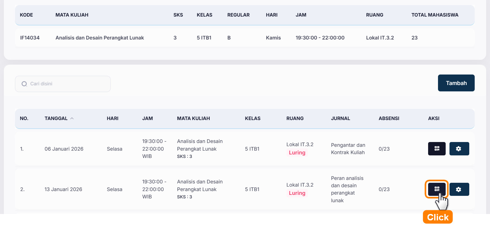
Berikut contoh kode QR yang terbentuk sebagai absensi mahasiswa melalui scan kode QR tersebut.
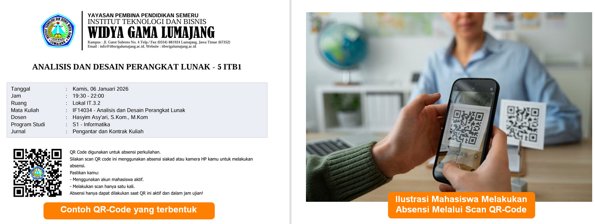
Secara teknis kode QR tersebut dapat dibagikan kepada mahasiswa dengan berbagai macam teknis seperti Menampilkan kode QR ke layar projektor atau Mahasiswa maju satu per satu kedepan untuk men-scan kode QR tersebut sehingga secara otomatis akan mengisi presensi kehadiran. Untuk melihat daftar mahasiswa yang berhasil absensi melalui scan kode QR dengan cara click icon aksi->absensi seperti pada gambar berikut.
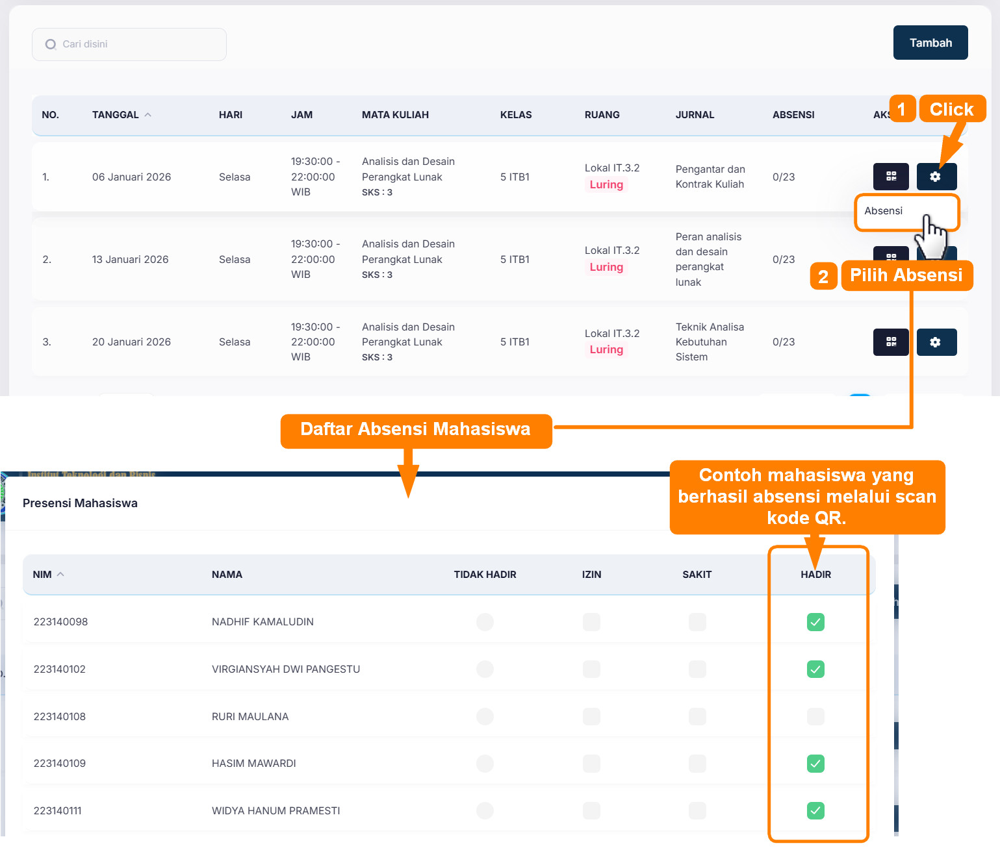
Lantas bagaimana dengan mahasiswa yang tidak hadir dikelas (Izin, Sakit, Tanpa Keterangan) serta mahasiswa yang sebenarnya tidak hadir dikelas namun mendapatkan kode QR dari teman yang berada dalam kelas. Bapak Ibu dosen dapat menggunakan teknis memanggil 1 per 1 mahasiswa untuk memastikan kehadirannya dan apabila pada absen sudah tercetang hadir namun mahasiswa tidak berada dikelas maka bapak ibu dosen dapat merubahnya secara manual dengan mencentang pada kolom yang sesuai seperti pada gambar berikut.
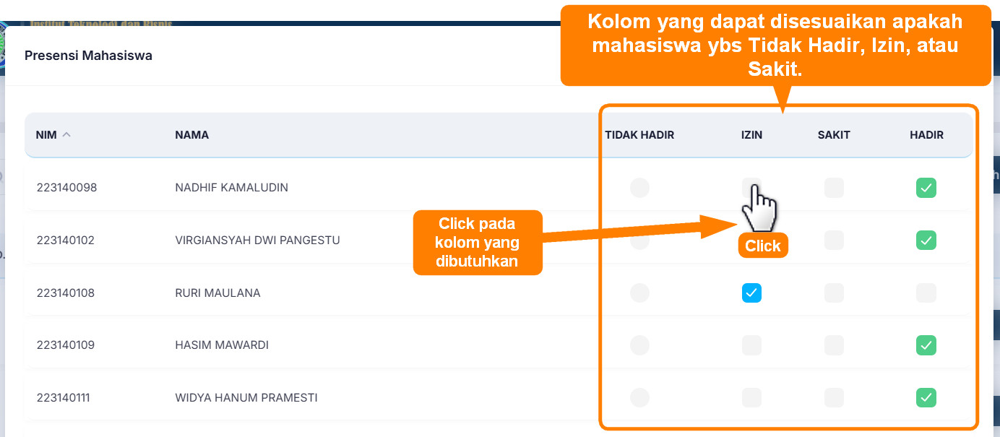
Tahap Ketiga
Setelah mahasiswa sudah melakukan absensi melalui scan kode QR, selanjutnya adalah menyimpan absensi tersebut secara permanen. Menyimpan absen secara permanen dapat dilakukan pada saat perkuliahan berlangsung maupun pasca perkuliahan berlangsung (H++). Menyimpan absen secara permanen juga ditandai dan diakui secara administratif sebagai perhitungan jumlah pertemuan tatap muka/daring. Sehingga untuk memenuhi syarat boleh melaksanakan UTS (7 kali tatap muka/daring) dan UAS (15 kali tatap muka/daring) akan terpenuhi. Adapun untuk menyimpan absensi secara permanen cukup dengan click simpan pada absensi mahasiswa dan pastikan tidak ada mahasiswa yang belum ter-Checklist supaya penyimpanan absensi permanen berhasil.
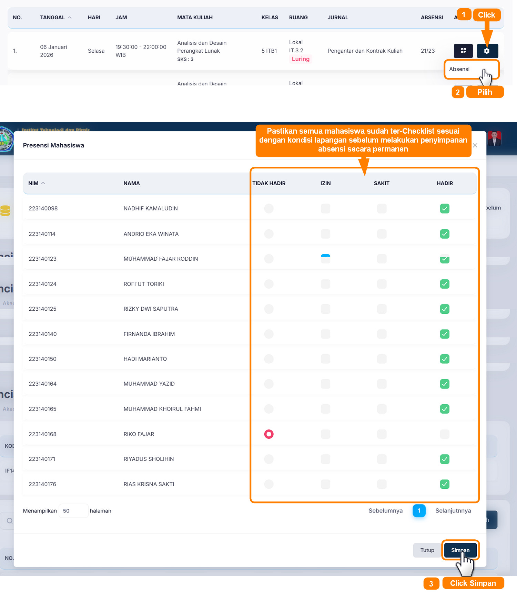
Setelah click simpan, maka akan muncul form konfirmasi dan pilih konfirmasi.
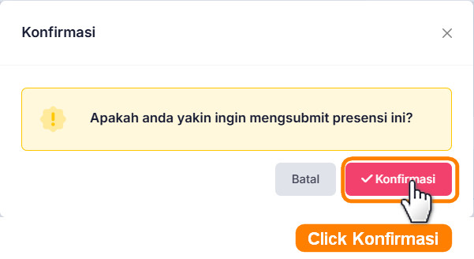
Pada saat pelaksanaan UTS maupun UAS, dosen tidak perlu lagi membuat jurnal perkuliahan melalui menu Akademik->Jurnal Perkuliahan seperti pada saat perkuliahan berlangsung. Hal tersebut dibedakan lantaran terdapat korelasi/triger dengan proses generate jadwal UTS/UAS yang dilakukan oleh tenaga administrasi akademik, dimana tenaga administrasi akademik melakukan generate jadwal UTS/UAS yang secara otomatis akan menjadwalkan pelaksanaan ujian ketika jurnal perkuliahan Bapak/Ibu dosen sudah memenuhi syarat minimal 7 kali pertemuan untuk UTS dan 15 kali pertemuan untuk UAS.
Jadwal pelaksanaan UTS/UAS yang sudah tergenerate oleh tenaga administrasi akademik akan secara otomatis masuk kedalam jurnal perkuliahan Bapak/Ibu dosen sehingga perlu diperhatikan supaya jurnal UTS tersusun setelah pertemuan ke-7, maka sebelum tenaga administrasi akademik generate jadwal pelaksanaan UTS jurnal perkuliahan wajib max 7 kali pertemuan. Begitu juga untuk UAS, supaya jurnal UAS tersusun setelah pertemuan ke-15, maka setelah pelaksanaan UTS penjurnalan max 7 kali supaya pelaksanaan UAS menjadi pertemuan ke-16.
Langkah Pertama
Untuk melakukan absensi UTS/UAS, klik menu Akademik kemudian pilih menu Pelaksanaan Ujian Semester seperti pada gambar berikut.
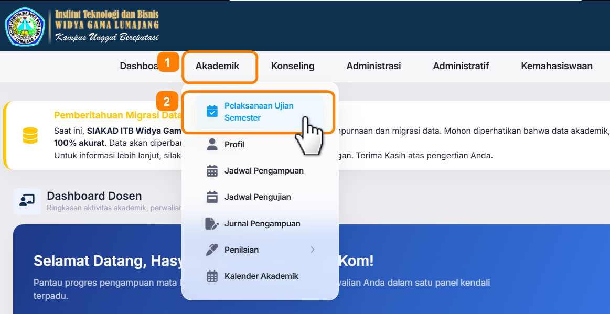
Langkah Kedua
Selanjutnya akan muncul daftar matakuliah yang sudah dijadwalkan untuk pelaksanaan UTS/UAS sesuai dengan periode pelaksanaan. Daftar matakuliah yang muncul adalah matakuliah yang sudah memenuhi syarat minimum untuk pelaksanaan UTS(7 Kali pertemuan) dan UAS(15 Kali pertemuan). Untuk melakukan absensi UTS/UAS secara teknis seperti pada saat perkuliahan yakni menampilkan kode QR maupun checklist absensi seperti contoh gambar berikut.
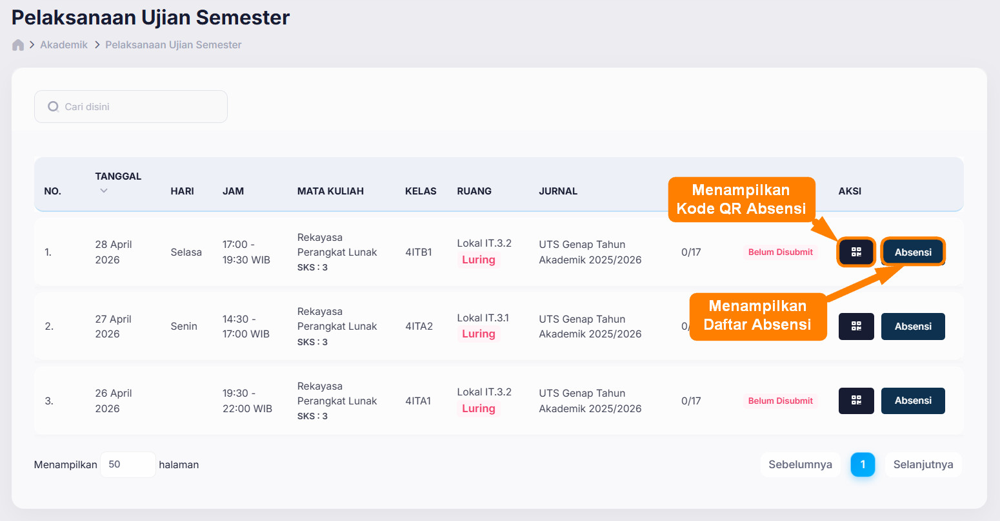
Pada gambar diatas, klik Icon Kode QR untuk menampilkan kode QR yang dapat discan oleh mahasiswa. klik Absensi untuk menampilkan daftar mahasiswa serta melakukan checklist terhadap mahasiswa (Hadir, izin, sakit, tidak hadir)
Berikut contoh daftar mahasiswa yang secara administratif dapat mengikuti UTS/UAS.
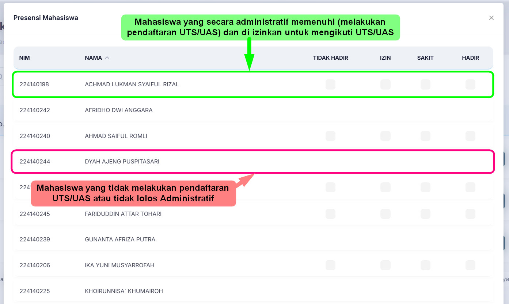
Pada gambar diatas terdapat perbedaan bagi mahasiswa yang secara administratif diizinkan untuk mengikuti UTS/UAS adalah menu Checklist pada mahasiswa tersebut muncul, sedangkan yang tidak lolos administratif menu Checklist pada mahasiswa tersebut tidak aktif/kosong.
Langkah Ketiga
Setelah semua mahasiswa sudah melakukan scan kode QR atau terchecklist, selanjutnya adalah menyimpan absen UTS/UAS secara permanen yaitu dengan Klik Kirim seperti pada contoh gambar berikut.
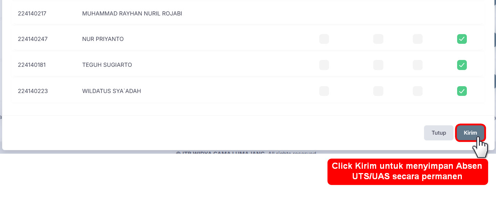